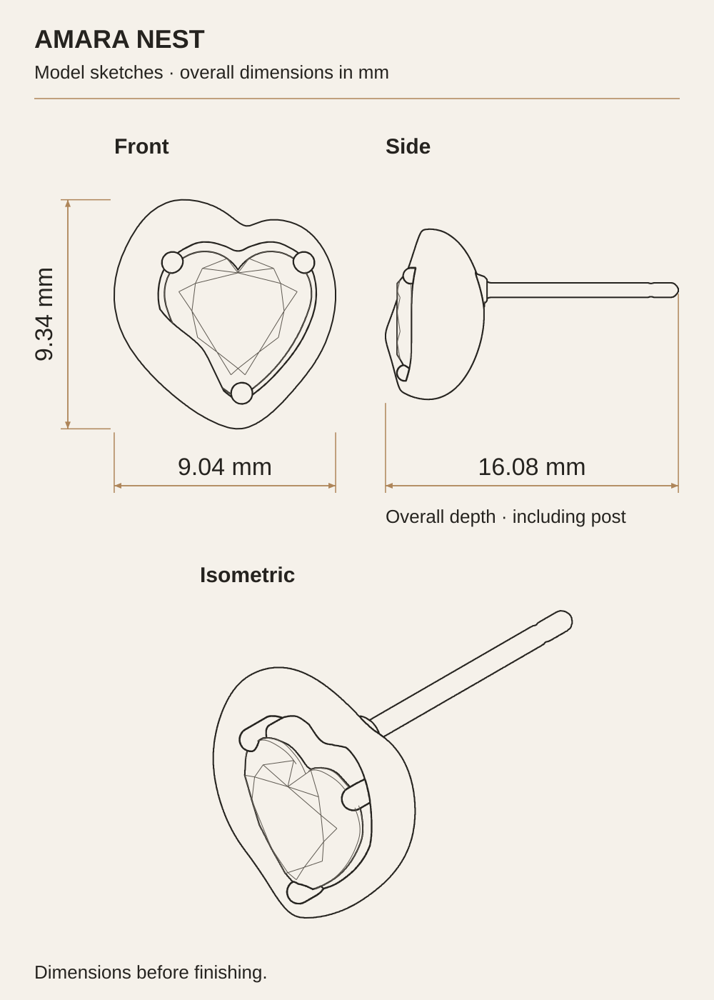
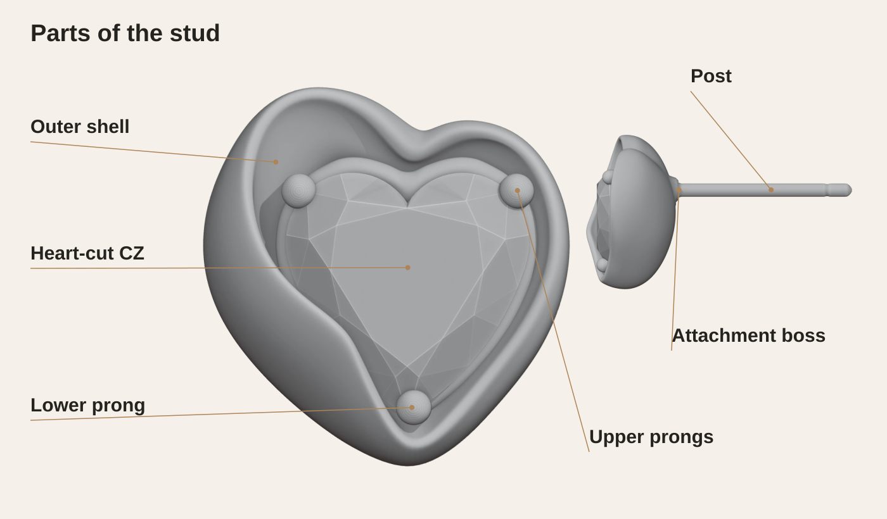
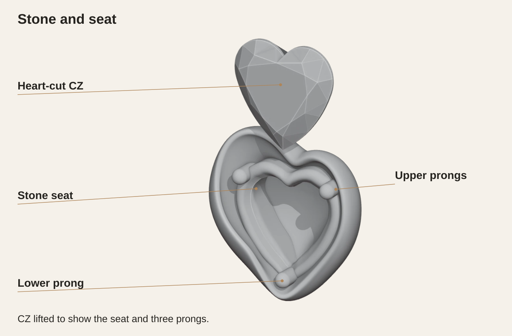

ADESINA ADEBOLA / INDEPENDENT DESIGN STUDY
Amara Nest
Specification

| Gem | |
|---|---|
| Stone | Clear cubic zirconia (CZ) |
| Cut | Heart |
| Model stone dimensions | 6.00 × 6.00 × 3.55 mm |
| Quantity | 1 per stud · 2 per pair |
| Setting | Three-prong seat |
| Metal & finish | |
| Metal | 925 sterling silver · proposed |
| Gold finish | 18K gold vermeil · proposed |
| Coating | 3.5 μm target · proposed |
| Surface | Satin fold, polished rim and prong tips · proposed |
| Model dimensions | |
| Head incl. attachment boss (W × H × D) | 9.04 × 9.34 × 5.58 mm |
| Heart shell depth, excluding boss | 5.41 mm |
| Total depth, including post | 16.08 mm |
| Post shaft diameter | Ø0.80 mm |
| Clear post length from rear boss face | 10.50 mm |
| Earring back | TBC |
| Estimated weight | 1.7 g per stud · 3.3 g per pair, excluding backs |
| Unit cost target | ≈ ₦15,000 per pair · planning target |
Model dimensions before finishing. Proposed metal and finish. Estimated weight in silver and CZ excludes backs. Unit cost is a planning target; sample approval pending.
Technical drawings
Assembly, post position, shell and stone seat. All dimensions are in millimetres.

02 / Post location and heart shell

03 / Seat and CZ

Dimension index
| Post shaft diameter | 0.80 mm |
|---|---|
| Post base collar diameter | 0.92 mm |
| Clear post from boss rear face A | 10.50 mm |
| Post centre from front-view left shell edge B | 4.38 mm |
| Post centre above lowest shell point C | 6.00 mm |
| Shell alone: depth | 5.41 mm |
| Seat: W × H × D | 6.51 × 6.70 × 2.35 mm |
| Local back wall at S–S, 4.24 mm above C | 0.81 mm |
| Seat opening at T–T, measured at mid-depth | 3.75 mm |
Parts and assembly
The shell, stone, seat and post, shown together and with the CZ lifted out.
Parts of the stud
View full size ⤢

Stone and seat
View full size ⤢
